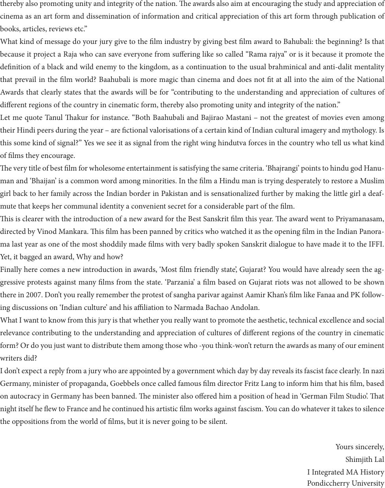

thereby also promoting unity and integrity of the nation. e awards also aim at encouraging the study and appreciation of
cinema as an art form and dissemination of information and critical appreciation of this art form through publication of
books, articles, reviews etc.”
What kind of message do your jury give to the lm industry by giving best lm award to Bahubali: the beginning? Is that
because it project a Raja who can save everyone from suering like so called “Rama rajya” or is it because it promote the
denition of a black and wild enemy to the kingdom, as a continuation to the usual brahminical and anti-dalit mentality
that prevail in the lm world? Baahubali is more magic than cinema and does not t at all into the aim of the National
Awards that clearly states that the awards will be for “contributing to the understanding and appreciation of cultures of
dierent regions of the country in cinematic form, thereby also promoting unity and integrity of the nation.”
Let me quote Tanul akur for instance. “Both Baahubali and Bajirao Mastani – not the greatest of movies even among
their Hindi peers during the year – are ctional valorisations of a certain kind of Indian cultural imagery and mythology. Is
this some kind of signal?” Yes we see it as signal from the right wing hindutva forces in the country who tell us what kind
of lms they encourage.
e very title of best lm for wholesome entertainment is satisfying the same criteria. ‘Bhajrangi’ points to hindu god Hanu-
man and ‘Bhaijan’ is a common word among minorities. In the lm a Hindu man is trying desperately to restore a Muslim
girl back to her family across the Indian border in Pakistan and is sensationalized further by making the little girl a deaf-
mute that keeps her communal identity a convenient secret for a considerable part of the lm.
is is clearer with the introduction of a new award for the Best Sanskrit lm this year. e award went to Priyamanasam,
directed by Vinod Mankara. is lm has been panned by critics who watched it as the opening lm in the Indian Panora-
ma last year as one of the most shoddily made lms with very badly spoken Sanskrit dialogue to have made it to the IFFI.
Yet, it bagged an award, Why and how?
Finally here comes a new introduction in awards, ‘Most lm friendly state’, Gujarat? You would have already seen the ag-
gressive protests against many lms from the state. ‘Parzania’ a lm based on Gujarat riots was not allowed to be shown
there in 2007. Don’t you really remember the protest of sangha parivar against Aamir Khan’s lm like Fanaa and PK follow-
ing discussions on ‘Indian culture’ and his aliation to Narmada Bachao Andolan.
What I want to know from this jury is that whether you really want to promote the aesthetic, technical excellence and social
relevance contributing to the understanding and appreciation of cultures of dierent regions of the country in cinematic
form? Or do you just want to distribute them among those who -you think-won’t return the awards as many of our eminent
writers did?
I don’t expect a reply from a jury who are appointed by a government which day by day reveals its fascist face clearly. In nazi
Germany, minister of propaganda, Goebbels once called famous lm director Fritz Lang to inform him that his lm, based
on autocracy in Germany has been banned. e minister also oered him a position of head in ‘German Film Studio’. at
night itself he ew to France and he continued his artistic lm works against fascism. You can do whatever it takes to silence
the oppositions from the world of lms, but it is never going to be silent.
Yours sincerely,
Shimjith Lal
I Integrated MA History
Pondiccherry University